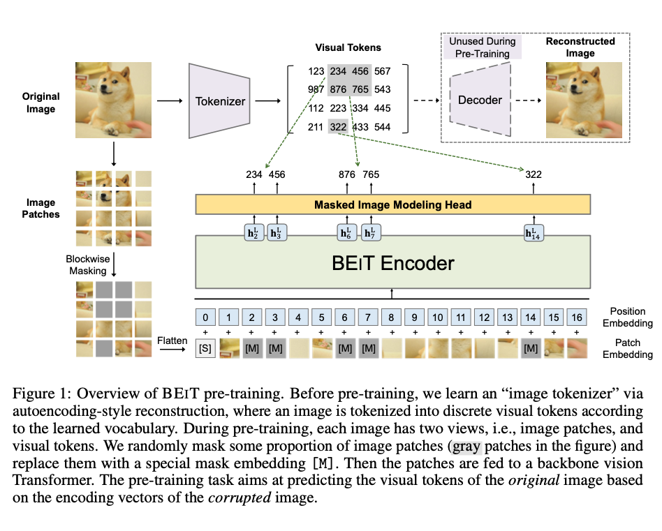
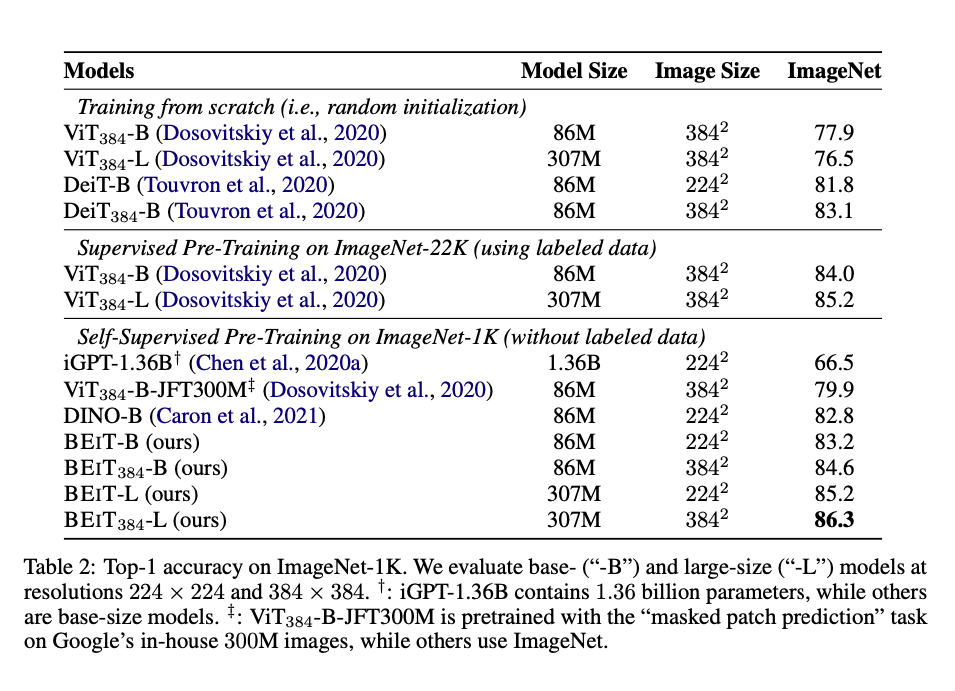
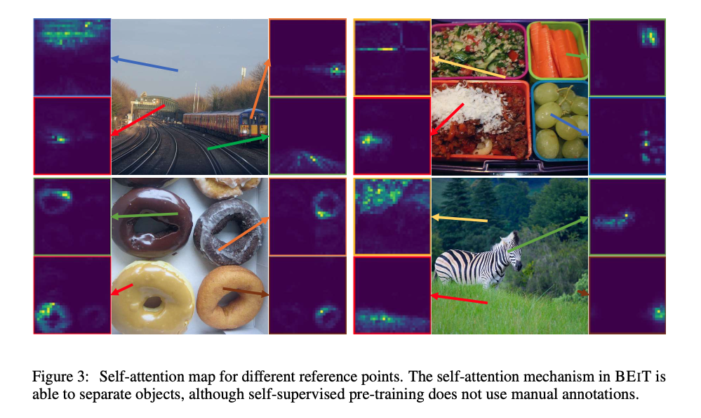

1. Read the title and make an opinion of what’s in the paper (e.g., the area, the task)
BEIT: BERT Pre-Training of Image Transformers
Everybody loves BERT these days and it is a simple way to signal what the paper is attempting. Simply put, BERT is a pretraining scheme for text, BEiT is a pretraining scheme for images.
2. Read the abstract well and form a hypothesis of
- What’s new in the paper?
- Do you have a clear overview about what the paper is all about?
We introduce a self-supervised vision representation model BEIT, which stands for Bidirectional Encoder representation from Image Transformers.
A initial question is where does the bidirectionality come from? Since text is a sequence it is easy to see how you get bidirectionality, but it is less clear with images.
Image Transformers are simply Transformer architecture originally designed for NLP has been ported to vision.
we propose a masked image modeling task to pretrain vision Transformers.
It is interesting to me to see such a long delay between the BERT introduction and something so close to BERT being introduced to vision. I know there have been attempts before such as the the ViT (Vision Transformer), But I don’t know how different it is from what is proposed in this paper.
image has two views in our pre-training, i.e, image patches (such as 16 × 16 pixels), and visual tokens (i.e., discrete tokens).
This is new to me. It looks as if there is an embedding space of 16x16 patches for visual tokens.
we first “tokenize” the original image into visual tokens. Then we randomly mask some image patches and fed them into the backbone Transformer. The pretraining objective is to recover the original visual tokens based on the corrupted image patches.
This seems pretty standard given the BERT inspiration.
After pre-training BEIT, we directly fine-tune the model parameters on downstream tasks by appending task layers upon the pretrained encoder.
Like fine-tuning for BERT.
They describe in their abstract their process, but do not signal why this is special at all or what the contribution is. However, they quote ‘competitive’ experimental results.
To compare with the current imagenet leaderboard from paperswithcode.com:
BEiT falls a few points behind the top leader of 90.45%.
3. Look at the images and extract a set of “questions” about what is not clear about their method from the images. Now your job is to answer these questions by reading the paper.
This is the primary image shown in the paper to visualize their method.

It seems the key contribution is the tokenization of visual patches. They say this embedding is learned before pretraining so it is unclear how much this affects the actual performance of the downstream model.
This is one way to approach the curse of dimensionality, because images are so large that space, that breaking down the patches into discrete objects may help it to learn representative tokens in the embedding easier.
As can be seen from the image:
- Image is split
- Then masked
- then Flattened
- position embeddings are added
- The model attempts to denoise the input
- loss is based on token accuracy
4. Read the method aiming to answer your “questions” about the paper. Focus on understanding only the things relevant for the story (i.e., to understand the contribution).
It is challenging to directly apply BERT- style pre-training for image data. First of all, there is no pre-exist(ing) vocabulary for vision Transformer’s input unit, i.e., image patches.
A straightforward alternative is regarding the task as a regression problem, which predicts the raw pixels of masked patches. However, such pixel-level recovery task tends to waste modeling capability on pre-training short-range dependencies and high-frequency details (Ramesh et al., 2021).
They go on to say their goal is to overcome these issues.
The model accepts the raw pixel values, which are broken into 16x16 patches, but it predicts Visual Tokens.
These tokens are derived as follows:
Following (Ramesh et al., 2021), we learn the image tokenizer via discrete variational autoencoder (dVAE).
The vocabulary size is set to |V| = 8192. In our work, we directly use the publicly available2 image tokenzier described in (Ramesh et al., 2021).
5. Read the experiments to convince you that the show results are caused by their claim. Be aware that the experiments highlighted are the best scenarios and are fully hyper-parameter tuned.
They claim that they have improvements over DINO and MoCo-V3 but don’t make strong statements of being SOTA. It is not exactly clear why there are superior in some instances, but they try to make the comparisons are fair as possible.

6. Make sure you answered all your questions. Did the authors convince you that their story has the effect that they claim?
I did mostly. They show an interesting outcome that their attention maps can be useful even though there are no explicit labels for the items.
